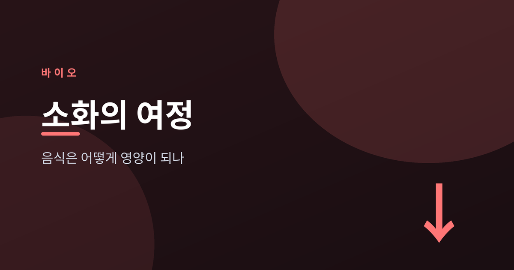
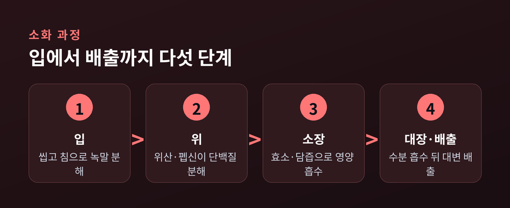
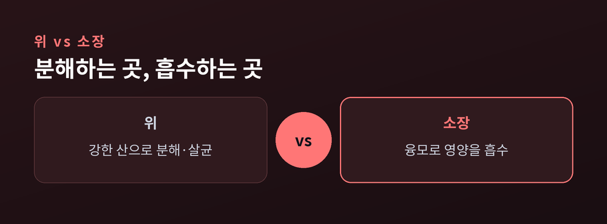
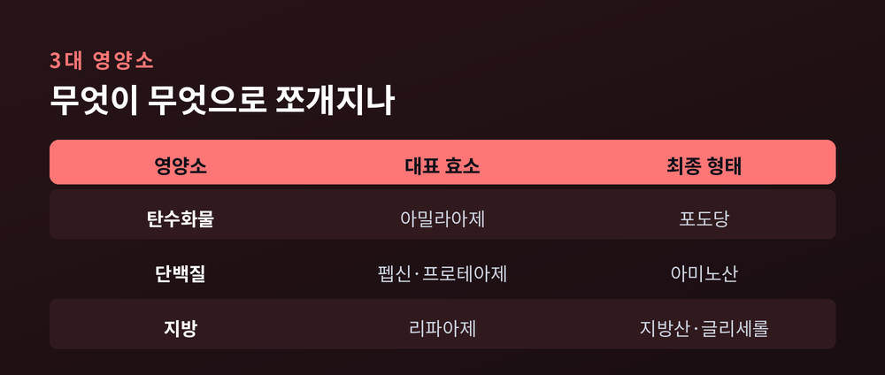
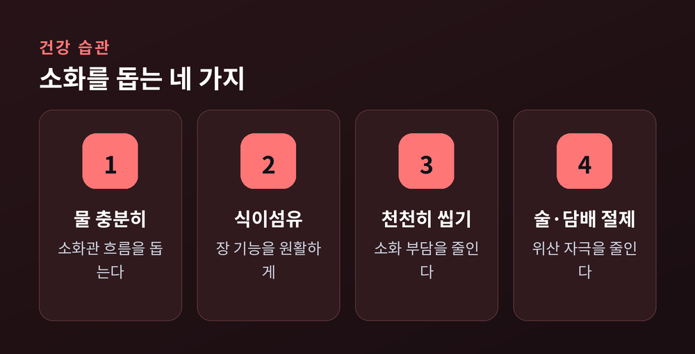

음식은 어떻게 영양이 되나

이번 글에서는 우리가 먹은 음식이 몸속에서 어떤 길을 지나 영양이 되는지, 그 소화의 여정을 처음부터 끝까지 정리해 보겠습니다. 매일 세 끼를 먹으면서도 정작 그 안에서 무슨 일이 벌어지는지는 잘 모르고 지나칩니다. 입에서 항문까지, 한 끼가 겪는 여정을 차례대로 따라가 보려 합니다.
먼저 세 줄로 요약하면 이렇습니다.
소화계는 여러 장기가 손발을 맞춰 음식에서 영양을 뽑아내는 협업입니다.
소화관 본체는 입, 식도, 위, 소장, 대장으로 이어집니다. 여기에 담즙과 효소를 보내주는 간, 담낭, 췌장이 곁에서 소화를 돕습니다.
소화에는 두 가지 방식이 함께 작동합니다. 이로 씹고 근육이 주무르는 기계적 소화, 그리고 효소가 분자 단위로 잘게 쪼개는 화학적 소화입니다. 이 둘이 단계마다 번갈아 일하며 큰 음식 덩어리를 몸이 흡수할 수 있는 작은 조각으로 바꿉니다.
이 관은 생각보다 깁니다. 쭉 펴면 약 9m에 이르지만, 가장 긴 장이 아랫배에서 둘둘 말려 있어 좁은 몸속에 알뜰히 자리 잡습니다. 한 끼가 이 긴 관을 통과하는 동안, 부위마다 전혀 다른 일이 벌어집니다.

소화는 음식을 보고 냄새를 맡는 순간 이미 시작됩니다. 침샘이 침을 내보내 입안을 촉촉하게 만들기 때문입니다.
침에는 아밀라아제라는 효소가 들어 있습니다. 이 효소가 전분, 곧 녹말을 분해하기 시작합니다. 밥을 오래 씹으면 단맛이 도는 것도 이 때문입니다. 씹는 동작은 음식을 잘게 부수어 표면적을 넓혀 줍니다. 삼킨 음식은 식도의 물결 같은 근육 운동, 연동운동에 실려 위로 내려갑니다.
위에서는 분위기가 사뭇 달라집니다. 위벽의 샘이 강한 위산과 효소를 쏟아내기 때문입니다. 위 내부는 대략 pH 1.5에서 3.5 사이의 강한 산성입니다. 이 산성 환경에서 펩시노겐이 펩신이라는 효소로 깨어나, 단백질을 짧은 사슬인 펩타이드로 잘라냅니다.
펩신의 힘은 이 강한 산성에서 가장 세집니다. 산이 옅어지면 그만큼 일솜씨도 무뎌집니다. 그래서 위는 굳이 산성을 유지하며 단백질 분해에 최적의 조건을 만들어 둡니다.
위산의 역할은 소화만이 아닙니다. 음식에 섞여 들어온 세균을 함께 무너뜨리는 방어선이기도 합니다. 위 근육은 음식과 소화액을 뒤섞어 걸쭉한 미즙으로 만든 뒤, 조금씩 소장으로 흘려보냅니다. 한꺼번에 쏟아내지 않고 조금씩 내보내는 덕분에, 소장은 밀려드는 음식을 여유 있게 처리할 수 있습니다.
소장은 소화관에서 가장 긴 부분으로 약 6.7m에 이릅니다. 흡수의 대부분이 바로 이곳에서 일어납니다.
췌장은 탄수화물과 지방, 단백질을 모두 다룰 수 있는 효소가 든 소화액을 소장으로 보냅니다. 간이 만들고 담낭이 저장해 둔 담즙도 흘러듭니다. 담즙은 큰 지방 덩어리를 잘게 유화시켜, 효소가 달라붙기 쉬운 상태로 바꿔 줍니다.
소장 안쪽 벽은 매끈하지 않습니다. 손가락처럼 돋은 융모가 빽빽하고, 그 위엔 더 미세한 미세융모가 솔처럼 덮여 있습니다. 이 주름진 구조가 흡수 면적을 크게 넓혀 줍니다. 좁은 관 안에서 최대한 많은 영양을 붙잡기 위한 설계인 셈입니다. 융모 속 모세혈관은 당과 아미노산, 수용성 비타민을 받아들이고, 암죽관이라 불리는 림프관은 지방을 거둬들입니다. 소장은 혈류에서 물까지 끌어와 반고체였던 음식을 액체에 가깝게 풀어, 영양소가 벽을 통과하기 쉽게 만듭니다.
예전엔 위가 소화의 중심처럼 여겨졌습니다. 지금 보면, 영양이 실제로 몸에 스며드는 무대는 소장인 셈입니다.

우리가 먹는 탄수화물, 단백질, 지방은 저마다 다른 효소의 손을 거칩니다.
탄수화물은 입의 아밀라아제가 첫 삽을 뜨고, 췌장의 아밀라아제가 이어받아 단순당으로 만듭니다. 마지막엔 포도당 같은 단당류로 잘게 나뉘어 흡수됩니다. 단백질은 위의 펩신이 펩타이드로 자른 뒤, 췌장과 소장 벽의 효소가 아미노산까지 마저 분해합니다. 지방은 담즙이 먼저 잘게 흩고, 췌장의 리파아제가 지방산과 글리세롤로 풀어냅니다.
정리하면, 지방은 리파아제, 탄수화물은 아밀라아제, 단백질은 프로테아제 계열 효소가 대표 일꾼입니다.

소장을 지난 나머지는 대장으로 넘어갑니다. 대장은 여기서 물과 전해질을 부지런히 흡수합니다. 내용물이 대변을 이룰 만큼 단단해질 때까지 수분을 거둬들이는 것입니다.
대장에는 어마어마한 수의 장내미생물이 살고 있습니다. 이들은 소장에서 미처 흡수되지 못한 식이섬유를 발효시킵니다. 이 과정에서 아세트산, 프로피온산, 부티르산 같은 단쇄지방산이 만들어집니다. 이 물질은 대장 세포의 에너지원이 되고, 물과 나트륨 흡수도 돕습니다.
단쇄지방산은 그냥 부산물이 아닙니다. 대장 세포에게는 요긴한 에너지원이 되어 줍니다. 식이섬유가 몸에 이롭다고 하는 이유 하나가 여기에 있습니다. 장내미생물은 비타민을 만들어 내기도 합니다. 비타민 K와 일부 비타민 B군이 대표적입니다. 우리 몸이 스스로 넉넉히 만들기 어려운 것들을, 장 속 미생물이 거들어 주는 셈입니다. 남은 찌꺼기는 대변이 되어 직장에 모였다가 항문으로 빠져나가며, 긴 여정이 마무리됩니다.
그렇다면 이 여정은 얼마나 걸릴까요. 마요클리닉에 따르면 음식이 위와 소장을 지나는 데 평균 약 6시간, 대장을 통과하는 데는 36~48시간까지 걸립니다. 먹은 것이 몸을 완전히 빠져나가기까지는 대체로 2~5일입니다. 물론 사람마다, 또 무엇을 얼마나 먹었느냐에 따라 달라집니다.
거창한 처방이 필요한 것은 아닙니다. 몇 가지 습관만으로도 소화관은 한결 편해집니다.
물을 충분히 마시면 음식이 소화관을 부드럽게 지나갑니다. 식이섬유를 살코기, 과일, 채소와 함께 챙기면 장 기능이 원활해집니다. 천천히 꼭꼭 씹어 먹는 것만으로도 소화 부담이 줄고, 스트레스를 다스리는 일 또한 도움이 됩니다. 술과 담배를 줄이는 것도 빼놓을 수 없습니다. 술은 위산을 늘려 속쓰림과 역류를 부추기기 때문입니다.
다만 이런 습관이 모든 불편을 해결해 주지는 않습니다. 소화기 증상은 원인이 다양해 스스로 판단하기 어려운 경우가 많습니다.

끝으로 한 마디만 더 드리겠습니다. 소화는 한 끼가 몸을 통과하며 겪는 긴 여정이자, 여러 장기가 조용히 이어달리는 협업입니다. 그 과정을 알고 나면, 매일의 식사를 조금 다르게 바라보게 됩니다.
"잘 먹는 일은 잘 소화하는 일에서 완성됩니다."
복통이나 속쓰림, 배변 변화 같은 특정 증상이 며칠 이상 지속되거나 점점 심해진다면, 혼자 판단하지 마시고 전문의 상담을 받아 보시길 권합니다.